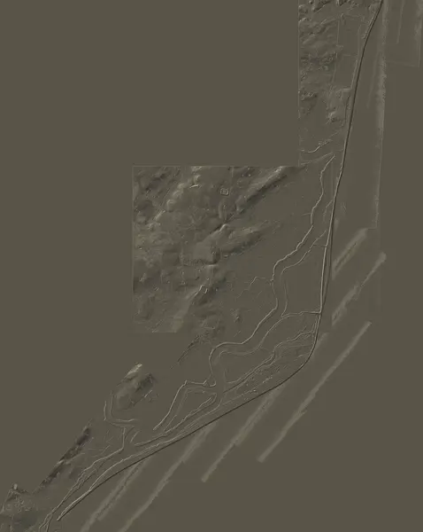

Terrain Archive
A growing archive of terrain studies created with the Oddscape Terrain Engine™.
Open a study to inspect the landscape, interpretation and available outputs.

Shifting Landscapes
Coastal terrain, shingle systems and shifting landform interpretation.
1 / 9